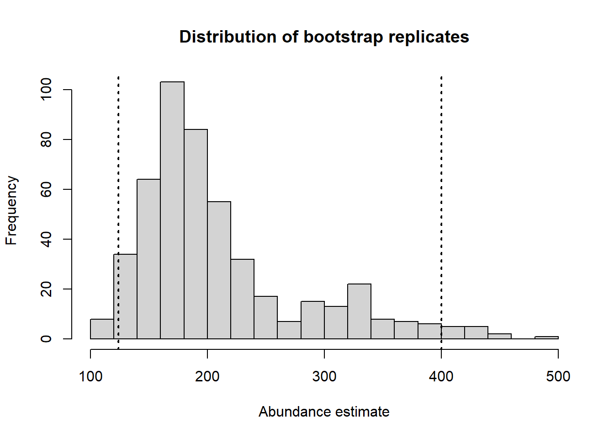

mydata <- read.csv("mystery.csv")
Demonstration
Start-to-finish analysis of mystery data set
Data import
No drama to bring the labelled data frame into our R session.
Exploratory data analysis
Number of strata, number of transects, number of detections, detections by sex
cat("Num strata= ", length(unique(mydata$Region.Label)))
cat("\nNum transects= ", length(unique(mydata$Sample.Label)))
cat("\nNum detects= ", sum(!is.na(mydata$distance)), "\n")
table(mydata$sex)Num strata= 1
Num transects= 12
Num detects= 43
female male
4 39 Distance distribution
hist(mydata$distance, main="All detections", breaks=seq(0,80,length=17),
xlab="Perpendicular distances (m)")vioplot(mydata$distance[mydata$sex=="male"],
mydata$distance[mydata$sex=="female"])Truncation decision
A rule of thumb (Lecture 2, slide 21)
Can also use estimated values of g(x) from fitted model as truncation criterion; truncate at w when g(w)=0.15
I’m reasonably content to stick with this rule of thumb, could slice out one more data point, if I truncated at 50m.
myunits <- convert_units("meter", "kilometer", "square kilometer")
first <- ds(mydata, convert_units = myunits)plot(first, breaks=seq(0,80,length=17))Specified endpoints > 79; values reset.abline(h=0.15, col="red", lty=3)
text(x=50, y=0.2, "Pr(detect)=0.15", cex=.8)
truncate <- 50Key function decision
unicos <- ds(mydata, key="unif", adj="cos", truncation = truncate, convert_units = myunits)
hn <- ds(mydata, key="hn", adj="cos", truncation = truncate, convert_units = myunits)
hr <- ds(mydata, key="hr", adj="cos", truncation = truncate, convert_units = myunits)Notice, adjustment terms did not survive the “within key function family” selection.
kable(summarize_ds_models(unicos, hn, hr, output="plain"), digits=3, row.names = FALSE,
caption="Key function models at 50m: do they fit?") %>%
kable_styling(full_width = F) %>%
column_spec(4, background="yellow", width="8em")| Model | Key function | Formula | C-vM $p$-value | Average detectability | se(Average detectability) | Delta AIC |
|---|---|---|---|---|---|---|
| hn | Half-normal | ~1 | 0.683 | 0.638 | 0.091 | 0.000 |
| unicos | Uniform with cosine adjustment term of order 1 | NA | 0.706 | 0.624 | 0.079 | 0.452 |
| hr | Hazard-rate with cosine adjustment term of order 2 | ~1 | 0.923 | 0.554 | 0.122 | 1.771 |
What about the covariate?
Recall, there are only 4 detections of females (10% of data set). Possibly, that few detections might not have a strong influence on the parameter estimates of the detection function. Nevertheless, apply the covariate to our models at our truncation distance:
hn.sex <- ds(mydata, key="hn", truncation = truncate, convert_units = myunits,
formula=~sex)
hr.sex <- ds(mydata, key="hr", truncation = truncate, convert_units = myunits,
formula=~sex)
# unicos.sex <- ds(mydata, key="unif", truncation = truncate, convert_units = myunits,
# formula=~sex)üòÖ uniform key function does not have a scale parameter \(\sigma\), hence cannot be fitted. That reduces the number of models of interest to us. We are left with the half normal and hazard rate keys, with and without the sex covariate and the uniform cosine that cannot support a covariate.
Do the models with covariates fit the data? I expect they should because adding more parameters to a model ought to improve fit. The half normal and hazard already fit the data without the covariate.
hn.sex.fit <- gof_ds(hn.sex, plot = FALSE, chisq = FALSE)$dsgof$CvM$p
hr.sex.fit <- gof_ds(hr.sex, plot = FALSE, chisq = FALSE)$dsgof$CvM$p
covfits <- data.frame(modname=c("HN sex", "HR sex"),
CvMP=round(c(hn.sex.fit, hr.sex.fit),2))
kable(covfits) %>%
kable_styling(full_width=FALSE, bootstrap_options="condensed")| modname | CvMP |
|---|---|
| HN sex | 0.73 |
| HR sex | 0.86 |
AIC among remaining five competitors
AIC(unicos, hn, hr, hn.sex, hr.sex) df AIC
unicos 1 307.7994
hn 1 307.3470
hr 3 309.1185
hn.sex 2 304.1897
hr.sex 3 305.6042What emerges? Half normal and uniform with cosine adjustment have very similar shapes and are quite similar models. The hazard rate key without a covariate seems out of contention. What about the similarity in \(\hat{P_a}\) between competing models?
kable(summarize_ds_models(unicos, hn,hr, hn.sex, hr.sex, output="plain"), digits=3, row.names = FALSE,
caption="Five competing models with truncation at 50m") %>%
kable_styling(full_width = F) %>%
column_spec(5, background="yellow", width="8em")| Model | Key function | Formula | C-vM $p$-value | Average detectability | se(Average detectability) | Delta AIC |
|---|---|---|---|---|---|---|
| hn.sex | Half-normal | ~sex | 0.727 | 0.567 | 0.092 | 0.000 |
| hr.sex | Hazard-rate | ~sex | 0.863 | 0.449 | 0.198 | 1.415 |
| hn | Half-normal | ~1 | 0.683 | 0.638 | 0.091 | 3.157 |
| unicos | Uniform with cosine adjustment term of order 1 | NA | 0.706 | 0.624 | 0.079 | 3.610 |
| hr | Hazard-rate with cosine adjustment term of order 2 | ~1 | 0.923 | 0.554 | 0.122 | 4.929 |
Models without sex as a covariate estimate a larger \(\hat{P_a}\), so even with only 4 female detections, those detections do exert an influence upon the shape of the estimated detection function and consequently upon \(\hat{P_a}\).
Are estimated \(\hat{P_a}(z_i)\) too small?
kable(p_dist_table(hn.sex, bins=seq(0,0.8,0.1), proportion=TRUE), digits=3,
caption="Estimated detection probabilities from HN with sex covariate.") %>%
kable_styling(full_width=FALSE, bootstrap_options="condensed")| p | count | proportion |
|---|---|---|
| 0 - 0.1 | 0 | 0.0 |
| 0.1 - 0.2 | 0 | 0.0 |
| 0.2 - 0.3 | 4 | 0.1 |
| 0.3 - 0.4 | 0 | 0.0 |
| 0.4 - 0.5 | 0 | 0.0 |
| 0.5 - 0.6 | 0 | 0.0 |
| 0.6 - 0.7 | 36 | 0.9 |
| 0.7 - 0.8 | 0 | 0.0 |
This distribution violates the guideline that <5% of \(\hat{P_a}\) should be less than 0.2. But I’m willing to overlook that.
Estimated detection function
summary(hn.sex$ddf)
Summary for ds object
Number of observations : 40
Distance range : 0 - 50
AIC : 304.1897
Optimisation : mrds (nlminb)
Detection function:
Half-normal key function
Detection function parameters
Scale coefficient(s):
estimate se
(Intercept) 2.175139 0.3170033
sexmale 1.242131 0.4112716
Estimate SE CV
Average p 0.5671481 0.09190364 0.1620452
N in covered region 70.5283160 13.91222961 0.1972574plot(hn.sex, main="Half normal with sex covariate")
add_df_covar_line(hn.sex, mydata, lty=1, lwd=2, col=c("red", "blue"))
legend("topright",
c("Average", "Males", "Females"),
col=c("black", "red", "blue"),
lty=1)Note the average (across sexes) detection probability curve is displaced toward the males that represent the largest proportion of the detections.
Estimated abundance
Best model, Half normal with sex covariate
print(hn.sex$dht$individual$N) Label Estimate se cv lcl ucl df
1 Total 164.5661 32.04176 0.1947045 111.3911 243.1253 38.7038If we wanted to employ the gold standard in precision estimation, we would apply a bootstrap
bootout <- bootdht(hn.sex, flatfile=mydata, summary_fun = bootdht_Nhat_summarize,
nboot=500, convert_units = myunits)Performing 500 bootstrapshist(bootout$Nhat, breaks = 20,
main="Distribution of bootstrap replicates", xlab="Abundance estimate")
mybounds <- round(quantile(bootout$Nhat, c(0.025, 0.975),na.rm=TRUE))
abline(v=mybounds, lwd=2, lty=3)
Confidence interval bounds from bootstrap are (127, 388), somewhat wider than the analytical confidence interval bounds specified above.
Closest AIC score competitor, Hazard rate with sex covariate
print(hr.sex$dht$individual$N) Label Estimate se cv lcl ucl df
1 Total 207.7639 95.9443 0.4617948 85.8307 502.9186 47.96291Notice the price, in terms of precision, paid for the extra parameter estimated in the hazard rate model compared to the half normal model.